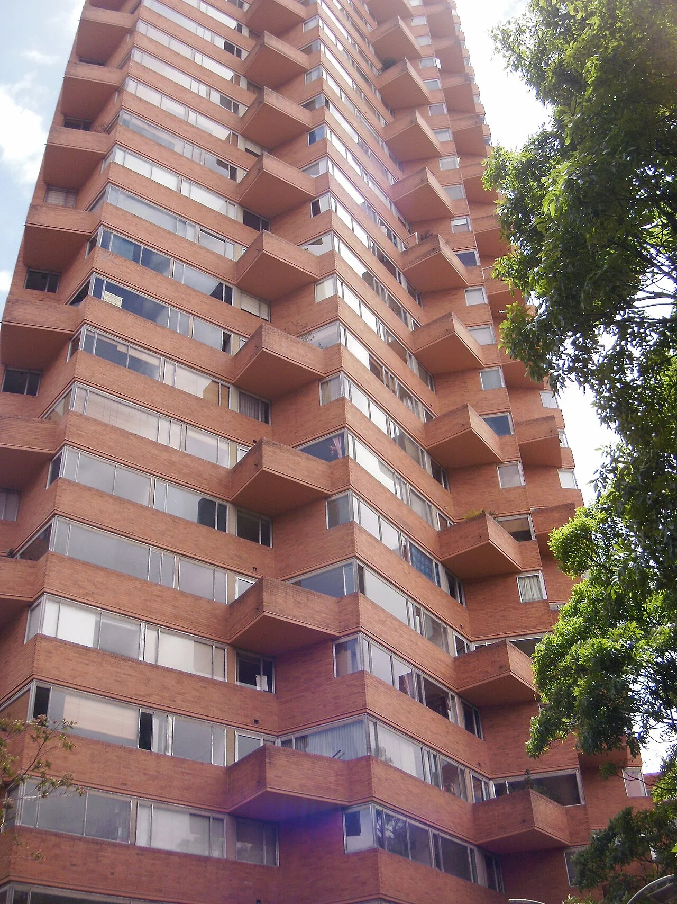
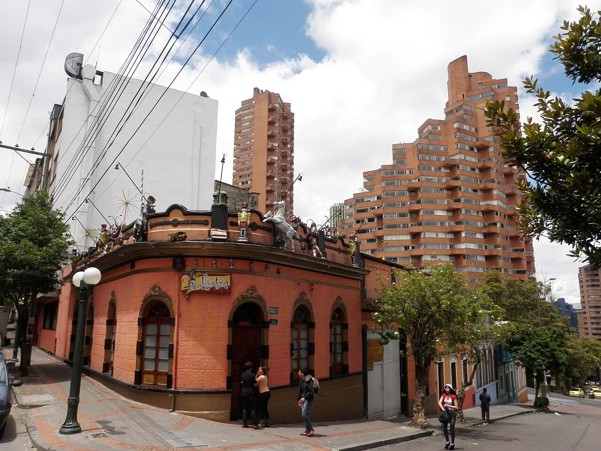

Un conjunto de vivienda puede ofrecer al peatón una fachada y una reja, o puede hacer que el recorrido de la ciudad intervenga en la forma del edificio. En las Torres del Parque, la memoria de Rogelio Salmona sitúa esa relación en primer plano: propone jardines, escalinatas y recorridos abiertos al entorno. La cuestión de diseño no empieza contando pisos. Empieza preguntando qué ocurre entre el límite de una vivienda privada y el suelo por el que pasa alguien que no vive allí. [1]
La Fundación Rogelio Salmona fecha el proyecto entre 1965 y 1970. Su posición junto al Parque de la Independencia, la plaza de toros y las estribaciones orientales de Bogotá obliga a trabajar con relaciones muy distintas: un parque, una pieza urbana de geometría fuerte y la pendiente. La memoria explica el conjunto desde esas condiciones. No corresponde leer las tres torres como objetos intercambiables que podrían aterrizar de la misma manera en cualquier lote. [1]
En la fotografía cercana, los balcones apilados hacen visible una fachada que avanza, gira y vuelve a retirarse. El ladrillo unifica ese movimiento, mientras los bordes de las losas introducen otra cadencia. La repetición deja reconocer viviendas sin producir una superficie enteramente plana. Mirado así, el volumen no depende solo de su silueta lejana: se construye con pequeñas variaciones que también tienen escala doméstica.


La otra fotografía, tomada desde una calle del entorno, ayuda a recuperar una relación que suele desaparecer en las imágenes de arquitectura: hay edificios bajos, cables, esquinas y personas antes de llegar a las torres. El conjunto participa en un campo visual que no controla por completo. Esa coexistencia permite discutir su presencia sin exigir que todo alrededor se convierta en un fondo ordenado para admirarlo.
El proyecto ofrece una pregunta útil sobre la densidad. Concentrar viviendas en altura libera una porción del suelo, pero ese resultado geométrico no dice todavía a quién sirve. Un jardín puede ser visible y permanecer reservado; una plataforma puede verse abierta y ser difícil de atravesar. Para hablar de una contribución urbana habría que estudiar continuidad de recorridos, condiciones de entrada y posibilidades de estancia, además de la superficie que queda sin construir.
Salmona describe en su memoria una intención explícita de relación con la ciudad y de apertura del espacio exterior. Conviene conservar la diferencia entre esa decisión de proyecto y el funcionamiento de hoy. Una obra puede cambiar sus reglas, sus cierres o su mantenimiento. Afirmar acceso actual requeriría comprobarlo. La memoria permite discutir qué se quiso construir; no acredita por sí sola la experiencia presente de todas las personas. [1]
También la topografía obliga a matizar el elogio. Escaleras y terrazas pueden producir un recorrido espacialmente rico y, al mismo tiempo, plantear dificultades para quien no puede subir peldaños. Una lectura contemporánea necesita preguntar por itinerarios continuos, descansos, pendientes y orientación. No se trata de cancelar el proyecto mediante un criterio posterior, sino de examinar con precisión qué partes de su propuesta siguen funcionando y cuáles necesitan otra solución.


El ladrillo merece una atención semejante. Su uso puede relacionar un edificio con técnicas y paisajes materiales de Bogotá, pero el material no incorpora automáticamente identidad ni calidad urbana. Importan la colocación, los encuentros con otros elementos, el envejecimiento y las reparaciones. Aquí su interés visual está en cómo permite seguir la continuidad del conjunto sin borrar las diferencias de cada frente y cada borde.
Para un nuevo proyecto de vivienda, la enseñanza práctica no sería copiar las curvas o revestir una torre en ladrillo. Sería dibujar desde el inicio lo que el peatón encontrará: por dónde podrá entrar, qué trayecto mantendrá continuidad, dónde podrá detenerse y quién cuidará ese espacio. Esas decisiones necesitan acuerdos de propiedad y gestión además de arquitectura. Un plano generoso puede volverse inaccesible si nadie sostiene sus condiciones de uso.
Las Torres del Parque permiten pensar la vivienda colectiva como ciudad entre edificios. Su interés está en hacer visible una responsabilidad que otros conjuntos delegan al cerramiento: construir también implica decidir qué puede devolver ese suelo al entorno. La respuesta se juzga caminando esa relación.
Fuentes.
Análisis de la memoria de proyecto y de imágenes de 2012 y 2013. La intención de apertura descrita por Salmona no sustituye una verificación actual del acceso o la accesibilidad.
Fuentes consultadas el 15.11.2026. Análisis e interpretación: RUMMOR. Edición privada para revisión.